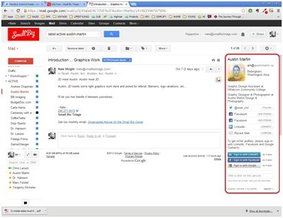
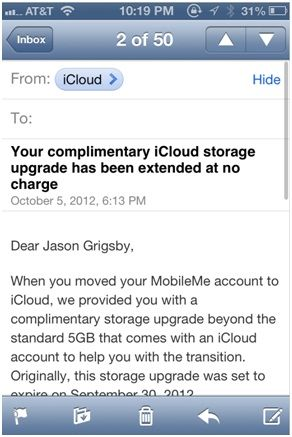

Answer
Choose one of these verticals. Where do you think it’ll be in ten years?
Interviewer writes on the board:
INTERVIEWER: Choose one of these five verticals. Where do you think it’ll be in ten years?
CANDIDATE: Hmm, I’ll choose education. I love my kids, and I think about how hard it is for them to learn. The oldest is trying to memorize a Chinese poem. Yesterday, she cried and cried because she couldn’t do it. She wanted to give up.
I gave her a tip: memorize the poem in chunks. It worked. It was easier to memorize bite-sized pieces of information and she memorized the entire poem within one hour.
So, to answer your question, I think in the next ten years there’s a huge opportunity to create the AllRecipes.com of learning; that is, every single lesson plan from every single teacher around the world can be indexed on a single website.
We would develop a Page Rank-like formula to determine the most effective way to teach a concept. It would accelerate the learning process exponentially. Who knows? Rather than spend 13 years to get through K-12 education, what if we could teach everyone the same material in just 5 years?
INTERVIEWER: K-12 in just 5 years? Impossible.
CANDIDATE: It’s a moon shot. I’ll tell you why I’m confident it might work. There are 5,000 characters in the Chinese language, but here’s the interesting thing: 300 Chinese characters are used in 65 percent of all discussions. Research has found that it’s easier to master Chinese if one focuses on knowing just those 300 characters really well and inferring the rest through context.
In one week, one can comprehend 85 percent of 300 Chinese characters. Alternatively, it’ll take three years to learn all 5,000 characters, increasing comprehension by only 5 percent.
The key is in knowing which 300 characters to learn. That’s what this website will help us determine, effective ways to teach.
INTERVIEWER: Okay, good learning methods make a difference; but the challenge is getting all the lesson plans out of teachers’ brains and into an indexed system. How are you going to do that?
CANDIDATE: The biggest barrier is documenting lesson plans and teaching methods. Jack Welch can be a great leader, but he can’t teach leadership, despite all the books he’s written. You see that time and time again:Many authors can’t teach success. On the opposite end of the spectrum, third-party sources try to document and teach greatness, and they fall short. For example, many authors have tried to capture Warren Buffett’s greatness, but fall short.
INTERVIEWER: Okay, so what’s your magic solution?
CANDIDATE: There’s a new technology that has a lot of promise: the Brain Cap. A University of Washington researcher invented it. It is a computer that can detect brain waves for thoughts and actions. Once the brain waves are recorded, they can be saved or transmitted to another person.
The Brain Cap is still in the early stages of development, but there’s potential. If we could constantly monitor and document teachers’ thoughts and techniques, we could create the world’s most effective database of lesson plans, cut down on learning time, and improve efficacy. This could be the biggest breakthrough for knowledge dissemination and learning since the Internet.
Comments: Well done. The candidate led with a personal hook into an industry he’s passionate about. Indexing all the lesson plans on the planet is a real problem and an audacious goal. The candidate clearly articulates the technology gap that enables the vision and introduces an early-stage invention that’s a plausible and impactful solution.
What do you think LinkedIn can do on the iPhone that is truly groundbreaking?
CANDIDATE: When I think about LinkedIn, there’s one thing I can do on my computer but I can’t do on my iPhone: view LinkedIn profiles in my mail client.

Using the Rapportive plug-in, my Gmail client can pull in LinkedIn information to the right of my email. It provides valuable context on whom I am emailing, what they do, and links to their social profiles.

By comparison, the iPhone mail client doesn’t have as much contextual information. There’s a lot of potential to have LinkedIn information within a mobile email app.
There are three different ways to solve this. First, we can maintain the status quo and have users toggle between their current smartphone mail client and the LinkedIn app or website if they’re looking for more information. While the solution is available today, the downside is that this is cumbersome for the user to toggle between multiple apps on their phone.
Second, we can create a new iPhone mail application which augments emails with LinkedIn information. The good news: it circumvents restrictions one would encounter within an iPhone mail client. Apple is notorious for having a closed ecosystem and blocking other apps from interfering from the core experience. Apple meticulously avoids the fragmentation that plagues operating systems such as Android, where the operating system varies based on the manufacturer and the model. The bad news is that many iPhone users are accustomed to using the iPhone mail app already and are unlikely to switch.
The third option is to have LinkedIn information in the existing the iPhone mail app. It’s least disruptive of all the solutions; it doesn’t require users to learn a new app. However, it could present some technical challenges.
INTERVIEWER: The 3rd option is impossible. Apple does not have an API for adding information into the built-in iPhone mail app. I understand you want to provide something that’s new and useful, but I don’t see how something like this could happen.
CANDIDATE: It does seem unlikely, but I believe we can do it without having API access to Apple’s mail client. I’ve given it some thought on how I would implement this.
First, I’d want a dynamic UI. When minimized, I could see at a glance the person’s photo, title, and past roles. However, I can tap to expand and see more information including LinkedIn connections, summary, and experience.
Second, I’d want dynamic content. Within the UI, I should have the options to connect with a LinkedIn contact. That’s the easy part. Today, we could do that by simply going to Safari. But here’s where it gets interesting: the next time I open the same email, I shouldn’t have an option to connect to the same person again, since I did it already. Instead, the mail should reflect different relationship statuses including: connect, invited, and already connected.
Lastly, I need the Apple client to add all this additional information without using an API.
INTERVIEWER: Ok, so where is this going?
CANDIDATE: Let me explain the technical solution that makes this happen. For the third item, I found that while we could not add to the mail client, we could modify the messages themselves. We can store the modified version of the message on a proxy server.
Only the user’s iPhone mail client would connect to the proxy server and serve up the LinkedIn-enhanced version of the message. If the user is viewing the same message on Gmail on their laptop, they would get the original, unenhanced version on the regular Gmail server.
One of the benefits of the proxy server approach: we know exactly what device is downloading message, so we can adapt the layout to the right screen size without worrying about compatibility with other devices.
For the first problem, you’re probably thinking that we can’t render JavaScript inside the iPhone mail client. And you’re right. However, the iPhone mail client does render CSS. And CSS does have a:hover state. On a mobile Safari browser rendering engine, which the iPhone mail client uses, has a unique interpretation of the :hover state. There’s no hovering on a mobile device. So tapping once, is equivalent to hovering over a link. And tapping twice is equivalent to selecting a link. By using this insight, we’ve enabled an interactive UI in the iPhone mail client. You can tap once to expand a LinkedIn profile. And tap twice to minimize it.
For the second problem, we need the message to check your relationship with the connection every time the email is opened. We can easily have the message check the server by having the status icon be represented as an <iframe>. Every time the mail is opened, the <iframe> would load the newest state. And if the device is offline, the <iframe> part of the message would simply default to the last known state.
INTERVIEWER: That’s a pretty audacious vision. I can see how you could fulfill it, especially with those Apple hacks. Good job.
Comments: The candidate presents an useful, but seemingly unattainable product vision. The candidate deftly convinces that his vision is doable by technically explaining how his vision could be achieved. This probably goes into more technical detail than your typical interview response, but was necessary to convince a skeptical interviewer.
Adapted from the article: http://linkd.in/1cKcGzB